Течения на картах обозначаются цветными стрелками, направление которых показывает направление течения воды. Течений в океане много. Наиболее крупные и важные из них имеют название. Соотнесите указанные течения с их изображением на картосхеме.
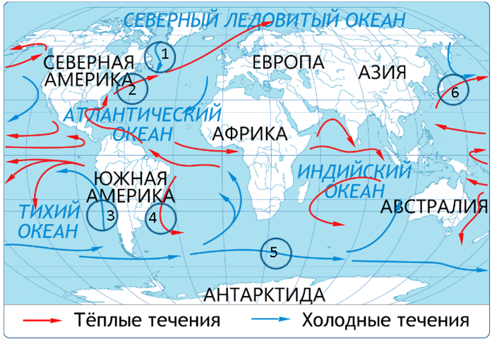
Соотнеси:
Куросио
Лабрадорское
Гольфстрим
Бразильское
Перуанское
Западных ветров
Запомни
Запомни суть: Течения на картах обозначаются цветными стрелками, направление которых показывает направление течения воды. Течений в океане много. Наиболее крупные и важные из них имеют название. Соотнесите указанные течения с их изобр… Правильный ответ в тесте нужно выбирать в том же виде, как ниже. Коротко: Куросио — 6; Лабрадорское — 1; Гольфстрим — 2; Бразильское — 4; Перуанское — 3; Западных ветров — 5
Ответ в формате теста
Куросио — 6
Лабрадорское — 1
Гольфстрим — 2
Бразильское — 4
Перуанское — 3
Западных ветров — 5
🌍 Карты, океан, атмосфера
география · Тест 1 География · вопрос 2 из 15
Вопрос
Установите соответствие между названиями морей и их принадлежностью к внутренним или окраинным. При ответе можно воспользоваться атласом.ВнутренниеОкраинные
Соотнеси:
Аравийское
Баренцево
Японское
Балтийское
Черное
Берингово
Средиземное
Красное
Запомни
Запомни суть: Установите соответствие между названиями морей и их принадлежностью к внутренним или окраинным. При ответе можно воспользоваться атласом.ВнутренниеОкраинные Правильный ответ в тесте нужно выбирать в том же виде, как ниже. Коротко: Аравийское — Окраинные; Баренцево — Окраинные; Японское — Окраинные; Балтийское — Внутренние; Черное — Внутренние; Берингово — Окраинные; Средиземное — Внутренние; Красное — Внутренние
Ответ в формате теста
Аравийское — Окраинные
Баренцево — Окраинные
Японское — Окраинные
Балтийское — Внутренние
Черное — Внутренние
Берингово — Окраинные
Средиземное — Внутренние
Красное — Внутренние
🌍 Карты, океан, атмосфера
география · Тест 1 География · вопрос 3 из 15
Вопрос
Вспомните, как изменяется температура вод Мирового океана в зависимости от географической широты и глубины, и выполните задание. Установите соответствие между географической широтой и температурой воды в Мировом океане.
Соотнеси:
0°с.ш.
90°с.ш.
60°с.ш.
30°с.ш.
Запомни
Запомни суть: Вспомните, как изменяется температура вод Мирового океана в зависимости от географической широты и глубины, и выполните задание. Правильный ответ в тесте нужно выбирать в том же виде, как ниже. Коротко: 0°с.ш. — +28°С; 90°с.ш. — -1,7°С; 60°с.ш. — +4,8°С; 30°с.ш. — +21°С
Ответ в формате теста
0°с.ш. — +28°С
90°с.ш. — -1,7°С
60°с.ш. — +4,8°С
30°с.ш. — +21°С
🌍 Карты, океан, атмосфера
география · Тест 1 География · вопрос 4 из 15
Вопрос
Установите соответствие между объектом в Мировом океане и определением.
Соотнеси:
Часть океана или моря, вдающаяся в сушу
Участок материка или острова, глубоко вдающийся в океан и окруженный водой с трех сторон
Небольшой участок суши в Мировом океане
Огромный участок суши в Мировом океане
Узкое водное пространство, разделяющее два участка суши, и соединяющее водоемы
Группа островов, расположенных недалеко друг от друга
Часть территории океана, отличающаяся особенностями географического положения, вод и обитающих в них организмов
Запомни
Запомни суть: Установите соответствие между объектом в Мировом океане и определением. Правильный ответ в тесте нужно выбирать в том же виде, как ниже. Коротко: Часть океана или моря, вдающаяся в сушу — Залив; Участок материка или острова, глубоко вдающийся в океан и окруженный водой с трех сторон — Полуостров; Небольшой участок суши в Мировом океане — Остров; Огромный участок суши в Мировом океане…
Ответ в формате теста
Часть океана или моря, вдающаяся в сушу — Залив
Участок материка или острова, глубоко вдающийся в океан и окруженный водой с трех сторон — Полуостров
Небольшой участок суши в Мировом океане — Остров
Огромный участок суши в Мировом океане — Материк
Узкое водное пространство, разделяющее два участка суши, и соединяющее водоемы — Пролив
Группа островов, расположенных недалеко друг от друга — Архипелаг
Часть территории океана, отличающаяся особенностями географического положения, вод и обитающих в них организмов — Море
🌍 Карты, океан, атмосфера
география · Тест 1 География · вопрос 5 из 15
Вопрос
Выберите правильные утверждения.
Варианты:
Берингов пролив разделяет материки Евразия и Северная Америка
Моря Баренцево и Чукотское относятся к бассейну Тихого океана
Океаны – это части Мирового океана, расположенные между Евразией и Северной Америкой
Гибралтарский пролив соединяет Средиземное море с Атлантическим океаном
Запомни
Запомни суть: Выберите правильные утверждения. Правильный ответ в тесте нужно выбирать в том же виде, как ниже. Коротко: Берингов пролив разделяет материки Евразия и Северная Америка; Гибралтарский пролив соединяет Средиземное море с Атлантическим океаном
Ответ в формате теста
Берингов пролив разделяет материки Евразия и Северная Америка
Гибралтарский пролив соединяет Средиземное море с Атлантическим океаном
🌍 Карты, океан, атмосфера
география · Тест 1 География · вопрос 6 из 15
Вопрос
Определите, правильны ли эти утверждения.
Варианты:
Большая часть воды на планете содержится в Мировом океане
В состав гидросферы входит вся солёная и пресная вода
Большая часть пресной воды содержится в реках и озёрах
Пресная вода составляет около 50 % от всей воды на Земле
Вода на Земле может находиться в одном из двух состояний: жидком или твёрдом
Запомни
Запомни суть: Определите, правильны ли эти утверждения. Правильный ответ в тесте нужно выбирать в том же виде, как ниже. Коротко: Большая часть воды на планете содержится в Мировом океане; В состав гидросферы входит вся солёная и пресная вода
Ответ в формате теста
Большая часть воды на планете содержится в Мировом океане
В состав гидросферы входит вся солёная и пресная вода
🌍 Карты, океан, атмосфера
география · Тест 1 География · вопрос 7 из 15
Вопрос
Определите объект, который НЕ является частью гидросферы. 1. Берингово море 2. Зондский архипелаг 3. Чудское озеро 4. Берингов пролив 5. Васюганское болото 6. Гудзонов залив
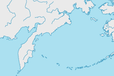
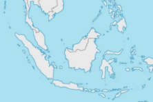
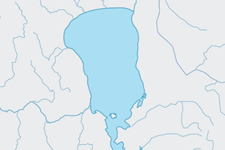
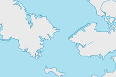
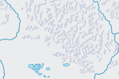
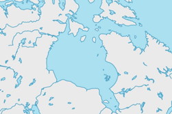
Варианты:
3
4
2
5
1
6
Запомни
Запомни суть: Определите объект, который НЕ является частью гидросферы. 1. Берингово море 2. Правильный ответ в тесте нужно выбирать в том же виде, как ниже. Коротко: 2
Ответ в формате теста
2
🌍 Карты, океан, атмосфера
география · Тест 1 География · вопрос 8 из 15
Вопрос
Выберите объекты гидросферы по типам вод - Воды суши
Варианты:
Моря
Проливы
Океаны
Озера
Реки
Подземные воды
Болота
Заливы
Запомни
Запомни суть: Выберите объекты гидросферы по типам вод - Воды суши Правильный ответ в тесте нужно выбирать в том же виде, как ниже. Коротко: Озера; Реки; Подземные воды; Болота
Ответ в формате теста
Озера
Реки
Подземные воды
Болота
🌍 Карты, океан, атмосфера
география · Тест 1 География · вопрос 9 из 15
Вопрос
В морской воде, кроме солей, растворены еще и газы. Среди них самый важный – кислород, который необходим всем живым организмам для дыхания. В холодных водах растворено больше кислорода, поэтому они более богаты рыбой. Какие широты более эффективны для рыболовства?
Варианты:
Тропические
Все части Мирового океана одинаково продуктивны
Умеренные и приполярные
Экваториальные
Запомни
Запомни суть: В морской воде, кроме солей, растворены еще и газы. Среди них самый важный – кислород, который необходим всем живым организмам для дыхания. В холодных водах растворено больше кислорода, поэтому они более богаты рыбой. Ка… Правильный ответ в тесте нужно выбирать в том же виде, как ниже. Коротко: Умеренные и приполярные
Ответ в формате теста
Умеренные и приполярные
🌍 Карты, океан, атмосфера
география · Тест 1 География · вопрос 10 из 15
Вопрос
-1311 марта 2011 года на побережье Японии с огромной скоростью обрушилась гигантская волна, высотой до 40м. Цунами явилось причиной аварии на атомной электростанции Фукусима. Волна разрушила 400 тысяч зданий, автомобильные и железные дороги, аэропорты. На заводе, занимающемся переработкой нефти, произошли взрывы и начались пожары. Что стало причиной возникновения цунами у берегов Японии?
Варианты:
Шторм
Наводнение
Падение метеорита
Подводное землетрясение
Запомни
Запомни суть: -1311 марта 2011 года на побережье Японии с огромной скоростью обрушилась гигантская волна, высотой до 40м. Цунами явилось причиной аварии на атомной электростанции Фукусима. Волна разрушила 400 тысяч зданий, автомобильн… Правильный ответ в тесте нужно выбирать в том же виде, как ниже. Коротко: Подводное землетрясение
Ответ в формате теста
Подводное землетрясение
🌍 Карты, океан, атмосфера
география · Тест 1 География · вопрос 11 из 15
Вопрос
Какое природное явление, изображенное на фотографии, привело к осушению полосы дна в океане?
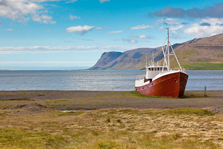
Варианты:
Прибой
Цунами
Прилив
Отлив
Запомни
Запомни суть: Какое природное явление, изображенное на фотографии, привело к осушению полосы дна в океане? Правильный ответ в тесте нужно выбирать в том же виде, как ниже. Коротко: Отлив
Ответ в формате теста
Отлив
🌍 Карты, океан, атмосфера
география · Тест 1 География · вопрос 12 из 15
Вопрос
С 1968 года в России действует Кислогубская приливная электростанция на побережье Баренцева моря. Приливная электростанция использует энергию приливов для выработки электроэнергии. Что является причиной возникновения приливов, обеспечивающих работу электростанции?
Варианты:
Солнечный свет
Воздействие силы притяжения Луны и Солнца
Вращение Земли
Подземные толчки
Запомни
Запомни суть: С 1968 года в России действует Кислогубская приливная электростанция на побережье Баренцева моря. Приливная электростанция использует энергию приливов для выработки электроэнергии. Что является причиной возникновения при… Правильный ответ в тесте нужно выбирать в том же виде, как ниже. Коротко: Воздействие силы притяжения Луны и Солнца
Ответ в формате теста
Воздействие силы притяжения Луны и Солнца
🌍 Карты, океан, атмосфера
география · Тест 1 География · вопрос 13 из 15
Вопрос
Выберите верные утверждения.
Варианты:
В воде океанов содержится не только соль, но и медь, серебро и даже золото
Чем меньше выпадает осадков и выше испарение, тем выше солёность воды
Температура воды с глубиной повышается
Солёность воды измеряют в процентах
Вода в океане замерзает при температуре около –2 °С
Пресной считается вода, солёность которой не превышает 1 %
Запомни
Запомни суть: Выберите верные утверждения. Правильный ответ в тесте нужно выбирать в том же виде, как ниже. Коротко: В воде океанов содержится не только соль, но и медь, серебро и даже золото; Чем меньше выпадает осадков и выше испарение, тем выше солёность воды; Вода в океане замерзает при температуре около –2 °С
Ответ в формате теста
В воде океанов содержится не только соль, но и медь, серебро и даже золото
Чем меньше выпадает осадков и выше испарение, тем выше солёность воды
Вода в океане замерзает при температуре около –2 °С
🌍 Карты, океан, атмосфера
география · Тест 1 География · вопрос 14 из 15
Вопрос
Выберите верные утверждения о волнах.
Варианты:
Сильный ветер – признак приближающегося цунами
Чем сильнее ветер, тем выше волны
Ветровые волны самые высокие и разрушительные
Высота волны – расстояние от её подошвы до гребня
Внезапный сильный отлив – главный признак приближения цунами
Волны в океане перемещают воду
Запомни
Запомни суть: Выберите верные утверждения о волнах. Правильный ответ в тесте нужно выбирать в том же виде, как ниже. Коротко: Чем сильнее ветер, тем выше волны; Высота волны – расстояние от её подошвы до гребня; Внезапный сильный отлив – главный признак приближения цунами
Ответ в формате теста
Чем сильнее ветер, тем выше волны
Высота волны – расстояние от её подошвы до гребня
Внезапный сильный отлив – главный признак приближения цунами
🌍 Карты, океан, атмосфера
география · Тест 1 География · вопрос 15 из 15
Вопрос
Дополните схему круговорота воды на Земле, поместив названия процессов в рамки на схеме.
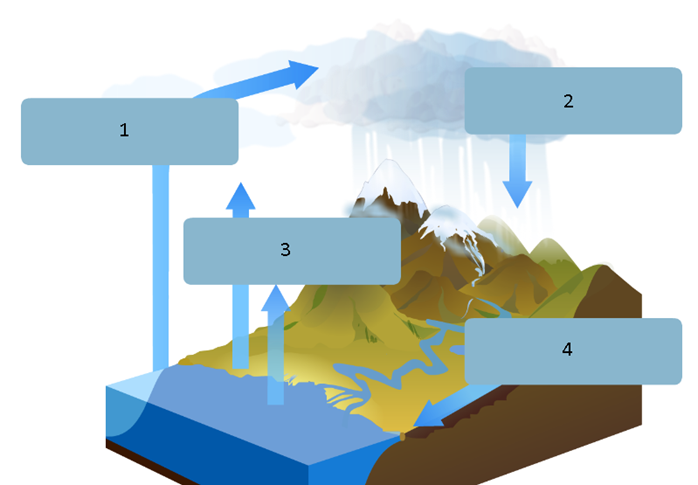
Элементы для порядка:
Перенос влаги
Выпадение осадков
Испарение
Сток
Запомни
Запомни суть: Дополните схему круговорота воды на Земле, поместив названия процессов в рамки на схеме. Правильный ответ в тесте нужно выбирать в том же виде, как ниже. Коротко: Перенос влаги; Выпадение осадков; Испарение; Сток
Ответ в формате теста
Перенос влаги
Выпадение осадков
Испарение
Сток
🌍 Карты, океан, атмосфера
география · Тест 2 География · вопрос 1 из 15
Вопрос
Опишите местоположение реки на основе заданного текста, выбрав соответствующие элементы содержания. Для ответа можно воспользоваться физической картой Европы и картой Евразии.Река Волга является одной из величайших рек мира. Она находится на материке (1) в его (2) части. Расположена в (3) широтах. Исток реки Волга находится на Валдайской возвышенности в центральной части (4) равнины. Впадает Волга в (5) море. Это бассейн (6) Течёт река с (7) . По характеру течения – река (8) течение (9) , речная долина (10) . Волга имеет много притоков. Река Ока является (11) притоком, река Кама –(12) .
Запомни суть: Опишите местоположение реки на основе заданного текста, выбрав соответствующие элементы содержания. Для ответа можно воспользоваться физической картой Европы и картой Евразии.Река Волга является одной из величайших рек м… Правильный ответ в тесте нужно выбирать в том же виде, как ниже. Коротко: Евразия; европейской; умеренных; Восточно-Европейской; Каспийское; бессточный; севера на юг; равнинная; спокойное; широкая; правым; левым
Ответ в формате теста
Евразия
европейской
умеренных
Восточно-Европейской
Каспийское
бессточный
севера на юг
равнинная
спокойное
широкая
правым
левым
🌍 Карты, океан, атмосфера
география · Тест 2 География · вопрос 2 из 15
Вопрос
Болота занимают огромные пространства на Земле. Они образуются при определённых условиях и обладают специфическими особенностями.Определите понятие «болото», вставив в текст соответствующие признаки.Болото – это водный объект, представляющий собой участок (1) постоянно или большую часть года насыщенный (2) , и покрытый специфической (3) растительностью, на котором происходит накопление (4) остатков растительности и превращение их в (5) .
Что вставить в пропуски (1), (2)…:
(1) морской глади / вулканического кратера / земной поверхности
(2) водой / солью / магмой
(3) болотной / морской / засухоустойчивой
(4) питательных / сухих / неразложившихся
(5) уголь / песок / торф
Запомни
Запомни суть: Болота занимают огромные пространства на Земле. Они образуются при определённых условиях и обладают специфическими особенностями.Определите понятие «болото», вставив в текст соответствующие признаки.Болото – это водный о… Правильный ответ в тесте нужно выбирать в том же виде, как ниже. Коротко: земной поверхности; водой; болотной; неразложившихся; торф
Ответ в формате теста
земной поверхности
водой
болотной
неразложившихся
торф
🌍 Карты, океан, атмосфера
география · Тест 2 География · вопрос 3 из 15
Вопрос
Установите соответствие между термином и его определением.
Территория, с которой вся вода стекает в одну реку
Естественный постоянный водный поток, текущий в созданном им углублении
Начало реки
Запомни
Запомни суть: Установите соответствие между термином и его определением. Правильный ответ в тесте нужно выбирать в том же виде, как ниже. Коротко: Углубление, выработанное постоянным водным потоком — Русло; Главная река со всеми притоками — Речная система; Место впадения реки в море, озеро или другую реку — Устье; Граница, разделяющая бассейны соседних рек — Водораздел; Территория, с …
Место впадения реки в море, озеро или другую реку — Устье
Граница, разделяющая бассейны соседних рек — Водораздел
Территория, с которой вся вода стекает в одну реку — Бассейн реки
Естественный постоянный водный поток, текущий в созданном им углублении — Река
Начало реки — Исток
🌍 Карты, океан, атмосфера
география · Тест 2 География · вопрос 4 из 15
Вопрос
Определите отличия горных и равнинных рек, выбрав из списка соответствующие им признаки.Горные рекиРавнинные реки
Соотнеси:
Русло почти без изгибов
Не используются для судоходства
Русло образует изгибы
Узкая речная долина
Быстрое течение
Спокойное течение
Используются для судоходства
Широкая речная долина
Запомни
Запомни суть: Определите отличия горных и равнинных рек, выбрав из списка соответствующие им признаки.Горные рекиРавнинные реки Правильный ответ в тесте нужно выбирать в том же виде, как ниже. Коротко: Русло почти без изгибов — Горные реки; Не используются для судоходства — Горные реки; Русло образует изгибы — Равнинные реки; Узкая речная долина — Горные реки; Быстрое течение — Горные реки; Спокойное течение — Равнинные реки; Используются…
Ответ в формате теста
Русло почти без изгибов — Горные реки
Не используются для судоходства — Горные реки
Русло образует изгибы — Равнинные реки
Узкая речная долина — Горные реки
Быстрое течение — Горные реки
Спокойное течение — Равнинные реки
Используются для судоходства — Равнинные реки
Широкая речная долина — Равнинные реки
🌍 Карты, океан, атмосфера
география · Тест 2 География · вопрос 5 из 15
Вопрос
В зависимости от наличия или отсутствия речного стока воды из озера различают озёра сточные и бессточные. Распределите перечисленные озёра в соответствующие группы. Для ответа можно использовать физическую карту мира.Сточные озераБессточные озера
Соотнеси:
Чад
Верхнее
Каспийское
Байкал
Балхаш
Виктория
Запомни
Запомни суть: В зависимости от наличия или отсутствия речного стока воды из озера различают озёра сточные и бессточные. Распределите перечисленные озёра в соответствующие группы. Для ответа можно использовать физическую карту мира.Сто… Правильный ответ в тесте нужно выбирать в том же виде, как ниже. Коротко: Чад — Бессточные озера; Верхнее — Сточные озера; Каспийское — Бессточные озера; Байкал — Сточные озера; Балхаш — Бессточные озера; Виктория — Сточные озера
Ответ в формате теста
Чад — Бессточные озера
Верхнее — Сточные озера
Каспийское — Бессточные озера
Байкал — Сточные озера
Балхаш — Бессточные озера
Виктория — Сточные озера
🌍 Карты, океан, атмосфера
география · Тест 2 География · вопрос 6 из 15
Вопрос
На каком континенте располагаются указанные объекты гидросферы?
Соотнеси:
Верхнее
Виктория
Эйр-Норт
Каспийское море
Титикака
Запомни
Запомни суть: На каком континенте располагаются указанные объекты гидросферы? Правильный ответ в тесте нужно выбирать в том же виде, как ниже. Коротко: Верхнее — Северная Америка; Виктория — Африка; Эйр-Норт — Австралия; Каспийское море — Евразия; Титикака — Южная Америка
Ответ в формате теста
Верхнее — Северная Америка
Виктория — Африка
Эйр-Норт — Австралия
Каспийское море — Евразия
Титикака — Южная Америка
🌍 Карты, океан, атмосфера
география · Тест 2 География · вопрос 7 из 15
Вопрос
Установите соответствие между понятием и его определением.
Соотнеси:
Ежегодно повторяющийся в один и тот же сезон года повышение уровня воды в реке
Регулярные (суточные, годовые) изменения состояния реки (изменения уровня воды, замерзание и вскрытие ото льда и т.д.), связанные с особенностями территории
Кратковременный резкий подъем уровня воды в реке
Ежегодно повторяющийся период (или периоды) длительного понижения уровня воды в реке
Запомни
Запомни суть: Установите соответствие между понятием и его определением. Правильный ответ в тесте нужно выбирать в том же виде, как ниже. Коротко: Ежегодно повторяющийся в один и тот же сезон года повышение уровня воды в реке — Половодье; Регулярные (суточные, годовые) изменения состояния реки (изменения уровня воды, замерзание и вскрытие ото льда и т.д.), связанные с особенностями те…
Ответ в формате теста
Ежегодно повторяющийся в один и тот же сезон года повышение уровня воды в реке — Половодье
Регулярные (суточные, годовые) изменения состояния реки (изменения уровня воды, замерзание и вскрытие ото льда и т.д.), связанные с особенностями территории — Режим реки
Кратковременный резкий подъем уровня воды в реке — Паводок
Ежегодно повторяющийся период (или периоды) длительного понижения уровня воды в реке — Межень
🌍 Карты, океан, атмосфера
география · Тест 2 География · вопрос 8 из 15
Вопрос
Распределите горные породы по группам.ВодоупорныеВодопроницаемые
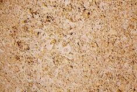
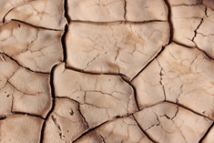
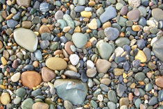
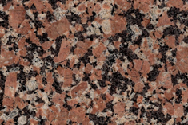
Соотнеси:
1. Известняк
2. Мрамор
5. Песок
4. Глина
3. Галька
6. Гранит
Запомни
Запомни суть: Распределите горные породы по группам.ВодоупорныеВодопроницаемые Правильный ответ в тесте нужно выбирать в том же виде, как ниже. Коротко: 1. Известняк — Водопроницаемые; 2. Мрамор — Водоупорные; 5. Песок — Водопроницаемые; 4. Глина — Водоупорные; 3. Галька — Водопроницаемые; 6. Гранит — Водоупорные
Ответ в формате теста
1. Известняк — Водопроницаемые
2. Мрамор — Водоупорные
5. Песок — Водопроницаемые
4. Глина — Водоупорные
3. Галька — Водопроницаемые
6. Гранит — Водоупорные
🌍 Карты, океан, атмосфера
география · Тест 2 География · вопрос 9 из 15
Вопрос
Как называются подземные воды с указанными свойствами? Установите соответствие.1. Артезианская2. Термальная3. Минеральная
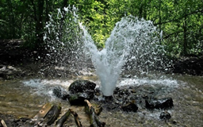
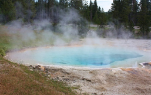
Соотнеси:
Вода, находящаяся под давлением между двумя пластами горных пород и под напором изливающаяся на земную поверхность.
Вода с повышенной температурой, поступающая из водоносных слоёв, расположенных глубоко под землёй
Вода, содержащая в своём составе растворённые газы и соли, полезные для здоровья
Запомни
Запомни суть: Как называются подземные воды с указанными свойствами? Установите соответствие.1. Артезианская2. Термальная3. Минеральная Правильный ответ в тесте нужно выбирать в том же виде, как ниже. Коротко: Вода, находящаяся под давлением между двумя пластами горных пород и под напором изливающаяся на земную поверхность. — 1; Вода с повышенной температурой, поступающая из водоносных слоёв, расположенных глубоко под землёй — 2; Вода, содержащая…
Ответ в формате теста
Вода, находящаяся под давлением между двумя пластами горных пород и под напором изливающаяся на земную поверхность. — 1
Вода с повышенной температурой, поступающая из водоносных слоёв, расположенных глубоко под землёй — 2
Вода, содержащая в своём составе растворённые газы и соли, полезные для здоровья — 3
🌍 Карты, океан, атмосфера
география · Тест 2 География · вопрос 10 из 15
Вопрос
Установите соответствие между видом оледенения и его кратким определением.
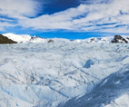
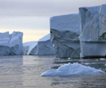
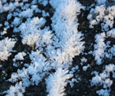
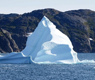
Соотнеси:
Покровный ледник
Шельфовый ледник
Многолетняя мерзлота
Айсберг
Запомни
Запомни суть: Установите соответствие между видом оледенения и его кратким определением. Правильный ответ в тесте нужно выбирать в том же виде, как ниже. Коротко: Покровный ледник — Ледники, образующиеся в полярных областях и занимающие большую площадь; Шельфовый ледник — Ледник, спустившийся с суши на прилегающую часть океана или моря; Многолетняя мерзлота — Скопление льда в верхнем слое земной коры…
Ответ в формате теста
Покровный ледник — Ледники, образующиеся в полярных областях и занимающие большую площадь
Шельфовый ледник — Ледник, спустившийся с суши на прилегающую часть океана или моря
Многолетняя мерзлота — Скопление льда в верхнем слое земной коры, не оттаивающее за лето
Айсберг — Гигантская глыба льда, плавающая в океане
🌍 Карты, океан, атмосфера
география · Тест 2 География · вопрос 11 из 15
Вопрос
Зачем в условиях многолетней мерзлоты строят дома на сваях (смотрите фото)? Сделайте обоснованное предположение.
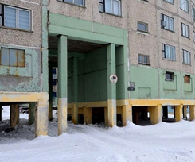
Варианты:
Чтобы укрываться от сильного ветра и вьюги
Чтобы создавать подземные холодильники
Чтобы пространство под домом не нагревалось
Чтобы снежные сугробы не заносили дома
Запомни
Запомни суть: Зачем в условиях многолетней мерзлоты строят дома на сваях (смотрите фото)? Сделайте обоснованное предположение. Правильный ответ в тесте нужно выбирать в том же виде, как ниже. Коротко: Чтобы пространство под домом не нагревалось
Ответ в формате теста
Чтобы пространство под домом не нагревалось
🌍 Карты, океан, атмосфера
география · Тест 2 География · вопрос 12 из 15
Вопрос
Выберите верные утверждения.
Варианты:
Самое крупное озеро в мире расположено в Африке
Все озёра – пресные водоёмы
Байкал – самое глубокое озеро на Земле
Самые глубокие озёра – вулканические
При недостаточном поступлении воды озёра могут пересыхать
Озёрная котловина – это природное углубление, в котором образовалось озеро
Запомни
Запомни суть: Выберите верные утверждения. Правильный ответ в тесте нужно выбирать в том же виде, как ниже. Коротко: Байкал – самое глубокое озеро на Земле; При недостаточном поступлении воды озёра могут пересыхать; Озёрная котловина – это природное углубление, в котором образовалось озеро
Ответ в формате теста
Байкал – самое глубокое озеро на Земле
При недостаточном поступлении воды озёра могут пересыхать
Озёрная котловина – это природное углубление, в котором образовалось озеро
🌍 Карты, океан, атмосфера
география · Тест 2 География · вопрос 13 из 15
Вопрос
Какие из приведённых утверждений о гейзерах являются верными?
Варианты:
Извергаемая вода никогда не достигает точки кипения (100 °С)
Извергаются непрерывно
Распространены там же, где и вулканы
Извергаются в виде фонтанов горячей воды и пара
Вода гейзеров полезна для здоровья
Запомни
Запомни суть: Какие из приведённых утверждений о гейзерах являются верными? Правильный ответ в тесте нужно выбирать в том же виде, как ниже. Коротко: Распространены там же, где и вулканы; Извергаются в виде фонтанов горячей воды и пара
Ответ в формате теста
Распространены там же, где и вулканы
Извергаются в виде фонтанов горячей воды и пара
🌍 Карты, океан, атмосфера
география · Тест 2 География · вопрос 14 из 15
Вопрос
Самый крупный горный ледник в мире – Беринг, названный в честь русского путешественника Витуса Беринга. Длина ледника Беринг, расположенного на Аляске, составляет 203 км. Ледник дает начало нескольким рекам. Какие утверждения, характеризующие горные ледники, являются верными?
Варианты:
Горные ледники – источник питания рек
Питание рек от ледников невозможно, они не тают
Горные ледники образуются на разной высоте
Горные ледники занимают обширные пространства в Антарктиде
Горные ледники сползают в океан
В полярных областях горные ледники образуются на уровне моря
Запомни
Запомни суть: Самый крупный горный ледник в мире – Беринг, названный в честь русского путешественника Витуса Беринга. Длина ледника Беринг, расположенного на Аляске, составляет 203 км. Ледник дает начало нескольким рекам. Какие утверж… Правильный ответ в тесте нужно выбирать в том же виде, как ниже. Коротко: Горные ледники – источник питания рек; Горные ледники образуются на разной высоте; Горные ледники сползают в океан
Ответ в формате теста
Горные ледники – источник питания рек
Горные ледники образуются на разной высоте
Горные ледники сползают в океан
🌍 Карты, океан, атмосфера
география · Тест 2 География · вопрос 15 из 15
Вопрос
В г. Игарке Красноярского края расположен единственный в мире музей, в котором находится подземелье в толще многолетней мерзлоты. Коридоры и залы музея вечной мерзлоты находятся на глубине 14 м. Поддержанию горных пород в равновесии способствует постоянная температура в залах, составляющая -5°С. Какие утверждения, характеризующие многолетнюю мерзлоту, являются верными?
Варианты:
Многолетняя мерзлота образуется каждой весной
Многолетняя мерзлота оттаивает летом
Многолетней мерзлотой занято примерно 25% суши
Породы многолетней мерзлоты сцементированы замерзшей влагой
Многолетняя мерзлота распространена на всех материках
Запомни
Запомни суть: В г. Игарке Красноярского края расположен единственный в мире музей, в котором находится подземелье в толще Правильный ответ в тесте нужно выбирать в том же виде, как ниже. Коротко: Многолетней мерзлотой занято примерно 25% суши; Породы многолетней мерзлоты сцементированы замерзшей влагой
Ответ в формате теста
Многолетней мерзлотой занято примерно 25% суши
Породы многолетней мерзлоты сцементированы замерзшей влагой
🌍 Карты, океан, атмосфера
география · Тест 3 География · вопрос 1 из 13
Вопрос
Главный источник загрязнения гидросферы – (1) .Больше всего воды расходуется человеком на (2) .Электростанция, использующая в качестве источника энергии движение воды, называется (3) .Для переброски воды в районы, где ощущается её недостаток, строят (4) .Чтобы использовать морскую воду, необходимо произвести её (5) .
Что вставить в пропуски (1), (2)…:
(1) космическая пыль / Деятельность человека / ультрафиолет
(2) орошение полей / уборка и стирка / питьевые нужды
(3) ТЭС / ГЭС / АЭС
(4) водоводы / каналы / водопроводы
(5) опреснение / конденсацию / очистку
Запомни
Запомни суть: Главный источник загрязнения гидросферы – (1) .Больше всего воды расходуется человеком на (2) .Электростанция, использующая в качестве источника энергии движение воды, называется (3) .Для переброски воды в районы, где ощ… Правильный ответ в тесте нужно выбирать в том же виде, как ниже. Коротко: 1 — Деятельность человека; 2 — орошение полей; 3 — ГЭС; 4 — каналы; 5 — опреснение
Ответ в формате теста
1 — Деятельность человека
2 — орошение полей
3 — ГЭС
4 — каналы
5 — опреснение
🌍 Карты, океан, атмосфера
география · Тест 3 География · вопрос 2 из 13
Вопрос
Распределите перечисленные водоёмы по группам на основании происхождения.ЕстественныеИскусственные
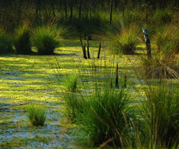
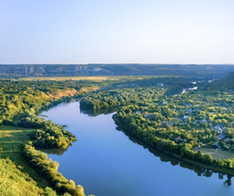
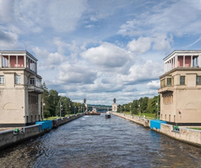
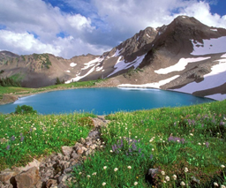
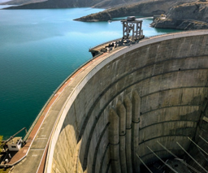
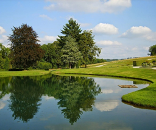
Соотнеси:
3. Болото
4. Река
1. Канал
5. Озеро
2. Водохранилище
6. Пруд
Варианты ответов: Естественные, Искусственные
Запомни
Запомни суть: Распределите перечисленные водоёмы по группам на основании происхождения.ЕстественныеИскусственные Правильный ответ в тесте нужно выбирать в том же виде, как ниже. Коротко: Болото — Естественные; Река — Естественные; Озеро — Естественные; Канал — Искусственные; Водохранилище — Искусственные; Пруд — Искусственные
Ответ в формате теста
Болото — Естественные
Река — Естественные
Озеро — Естественные
Канал — Искусственные
Водохранилище — Искусственные
Пруд — Искусственные
🌍 Карты, океан, атмосфера
география · Тест 3 География · вопрос 3 из 13
Вопрос
Используя карты, установите соответствие между водными объектами и каналами, которые их соединяют.
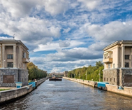
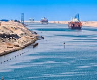
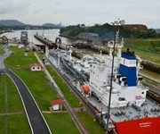
Соотнеси:
3. Канал имени Москвы
2. Суэцкий канал
1. Панамский канал
Варианты ответов: между морем и океаном, между двумя морями, между реками
Запомни
Запомни суть: Используя карты, установите соответствие между водными объектами и каналами, которые их соединяют. Правильный ответ в тесте нужно выбирать в том же виде, как ниже. Коротко: Канал имени Москвы — между реками; Суэцкий канал — между двумя морями; Панамский канал — между морем и океаном
Ответ в формате теста
Канал имени Москвы — между реками
Суэцкий канал — между двумя морями
Панамский канал — между морем и океаном
🌍 Карты, океан, атмосфера
география · Тест 3 География · вопрос 4 из 13
Вопрос
Атмосфера – воздушная оболочка Земли – представляет смесь газов, состоящую в основном из азота, кислорода и других газов. Соотнесите входящие в состав оболочки газы с их процентным содержанием на диаграмме.
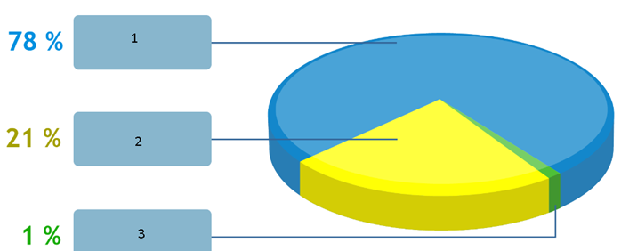
Соотнеси:
1
2
3
Варианты ответов: Метан, Сероводород, Фтор, Другие газы, Кислород, Азот
Запомни
Запомни суть: Атмосфера – воздушная оболочка Земли – представляет смесь газов, Правильный ответ в тесте нужно выбирать в том же виде, как ниже. Коротко: Обычно на круговой диаграмме: 1 — Азот (~78 %), 2 — Кислород (~21 %), 3 — Другие газы. Сверь номера с картинкой в тесте.
Ответ в формате теста
Обычно на круговой диаграмме: 1 — Азот (~78 %), 2 — Кислород (~21 %), 3 — Другие газы. Сверь номера с картинкой в тесте.
🌍 Карты, океан, атмосфера
география · Тест 3 География · вопрос 5 из 13
Вопрос
Подъем воды в дельте Невы приводит к затоплению значительной части Санкт-Петербурга. Западный ветер с Балтики вызывает подъем нагонной волны и ее движения в направлении устья Невы, где эта волна встречается с движущимся во встречном направлении естественным течением реки. Подъем воды усиливается из-за полого и мелкого дна в устье Невы.Что является причиной наводнений в Санкт-Петербурге?
Варианты:
Нагонная волна
Паводок
Половодье
Затор
Запомни
Запомни суть: Подъем воды в дельте Невы приводит к затоплению значительной части Санкт-Петербурга. Западный ветер с Балтики вызывает подъем нагонной волны и ее движения в направлении устья Невы, где эта волна встречается с движущимся … Правильный ответ в тесте нужно выбирать в том же виде, как ниже. Коротко: Нагонная волна
Ответ в формате теста
Нагонная волна
🌍 Карты, океан, атмосфера
география · Тест 3 География · вопрос 6 из 13
Вопрос
Укажите вершину, на которой температура воздуха составляет –6 °C.
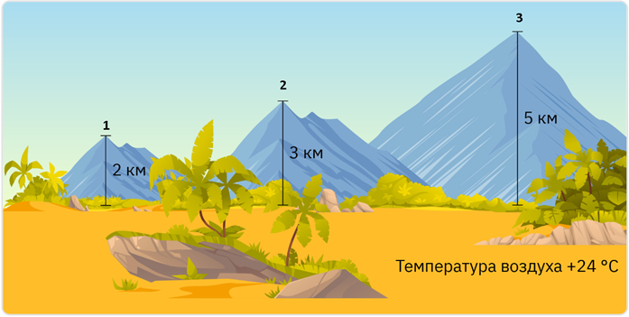
Варианты:
1
3
2
Запомни
Запомни суть: Укажите вершину, на которой температура воздуха составляет –6 °C. Правильный ответ в тесте нужно выбирать в том же виде, как ниже. Коротко: Смотри схему в тесте: чем выше точка, тем холоднее (примерно −6 °C на нужной вершине). Выбери номер вершины по подписям высот.
Ответ в формате теста
Смотри схему в тесте: чем выше точка, тем холоднее (примерно −6 °C на нужной вершине). Выбери номер вершины по подписям высот.
🌍 Карты, океан, атмосфера
география · Тест 3 География · вопрос 7 из 13
Вопрос
Выберите опасные стихийные явления, связанные с гидросферой.1. Сель2. Ураган3. Обвал4. Наводнение5. Цунами6. Землетрясение
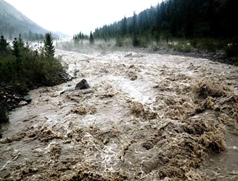
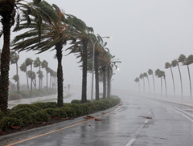
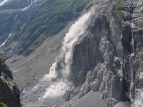
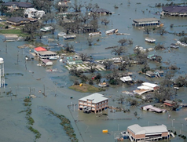
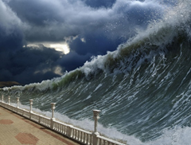
Варианты:
1
2
3
4
5
6
Запомни
Запомни суть: Выберите опасные стихийные явления, связанные с гидросферой.1. Сель2. Ураган3. Обвал4. Наводнение5. Цунами6. Землетрясение Правильный ответ в тесте нужно выбирать в том же виде, как ниже. Коротко: 1 (сель); 4 (наводнение); 5 (цунами)
Ответ в формате теста
1 (сель)
4 (наводнение)
5 (цунами)
🌍 Карты, океан, атмосфера
география · Тест 3 География · вопрос 8 из 13
Вопрос
В 2013 году на юге Дальнего Востока произошло катастрофическое наводнение. Причиной наводнения стали затяжные осадки, которые привели к увеличению уровня воды в реке Амур. За время наводнения уровень воды в реке у города Хабаровска поднялся до 808 см, что стало рекордом с начала наблюдений. Какие меры необходимо предпринимать для предотвращения последствий наводнения? Выбери два верных ответа.
Варианты:
Строительство мостов через реку
Осушение рек
Разгон облаков для предотвращения осадков
Определение вероятности наступления наводнения в определенном месте и своевременное информирование населения
Составление регулярных прогнозов подъема уровня воды в водоемах
Запомни
Запомни суть: В 2013 году на юге Дальнего Востока произошло катастрофическое наводнение. Причиной наводнения стали затяжные осадки, которые привели к увеличению уровня воды в реке Амур. За время наводнения уровень воды в реке у города… Правильный ответ в тесте нужно выбирать в том же виде, как ниже. Коротко: Определение вероятности наступления наводнения в определенном месте и своевременное информирование населения; Составление регулярных прогнозов подъема уровня воды в водоемах
Ответ в формате теста
Определение вероятности наступления наводнения в определенном месте и своевременное информирование населения
Составление регулярных прогнозов подъема уровня воды в водоемах
🌍 Карты, океан, атмосфера
география · Тест 3 География · вопрос 9 из 13
Вопрос
Выберите верные утверждения об атмосфере.
Варианты:
Большая часть погодных явлений наблюдается в стратосфере
В тропосфере температура воздуха с высотой понижается
Азот, содержащийся в атмосфере, защищает Землю от ультрафиолетового излучения
С высотой количество кислорода в воздухе повышается
Большая часть воздуха содержится в тропосфере
Атмосфера не имеет резкой верхней границы
Запомни
Запомни суть: Выберите верные утверждения об атмосфере. Правильный ответ в тесте нужно выбирать в том же виде, как ниже. Коротко: В тропосфере температура воздуха с высотой понижается; Большая часть воздуха содержится в тропосфере; Атмосфера не имеет резкой верхней границы
Ответ в формате теста
В тропосфере температура воздуха с высотой понижается
Большая часть воздуха содержится в тропосфере
Атмосфера не имеет резкой верхней границы
🌍 Карты, океан, атмосфера
география · Тест 3 География · вопрос 10 из 13
Вопрос
Выбери верные утверждения
Варианты:
Снег отражает большую часть солнечных лучей
От солнечных лучей вода нагревается быстрее, чем суша
Причиной усиления «парникового эффекта» является накопление азота в атмосфере
Воздух нагревается от поверхности суши или воды
Максимальная температура, отмеченная за год, называется амплитудой
Самая низкая температура на Земле зарегистрирована в Антарктиде
Запомни
Запомни суть: Выбери верные утверждения Правильный ответ в тесте нужно выбирать в том же виде, как ниже. Коротко: Снег отражает большую часть солнечных лучей; Воздух нагревается от поверхности суши или воды; Самая низкая температура на Земле зарегистрирована в Антарктиде
Ответ в формате теста
Снег отражает большую часть солнечных лучей
Воздух нагревается от поверхности суши или воды
Самая низкая температура на Земле зарегистрирована в Антарктиде
🌍 Карты, океан, атмосфера
география · Тест 3 География · вопрос 11 из 13
Вопрос
Расставьте слои атмосферы в правильном порядке, начиная с ближайшего к поверхности Земли
Наблюдается Полярное сияние. Температура воздуха повышается(Термосфера)
Температура воздуха до –80 °С. Самые высокие серебристые облака (Мезосфера)
Озоновый слой. Около 20 % воздуха (Стратосфера)
Атмосфера переходит в космос (Экзосфера)
Запомни
Запомни суть: Расставьте слои атмосферы в правильном порядке, начиная с ближайшего к поверхности Земли Правильный ответ в тесте нужно выбирать в том же виде, как ниже. Коротко: 1. Тропосфера; 2. Стратосфера; 3. Мезосфера; 4. Термосфера; 5. Экзосфера
Ответ в формате теста
1. Тропосфера
2. Стратосфера
3. Мезосфера
4. Термосфера
5. Экзосфера
🌍 Карты, океан, атмосфера
география · Тест 3 География · вопрос 12 из 13
Вопрос
Количество солнечного тепла, поступающего на земную поверхность, определяется высотой Солнца над горизонтом, которая зависит от широты местности. Чем выше Солнце, тем больше угол падения солнечных лучей, тем больше тепла поступает на земную поверхность.Расположите отмеченные на карте города в порядке увеличения количества солнечного тепла, поступающего на земную поверхность в полдень по местному времени 21 марта.
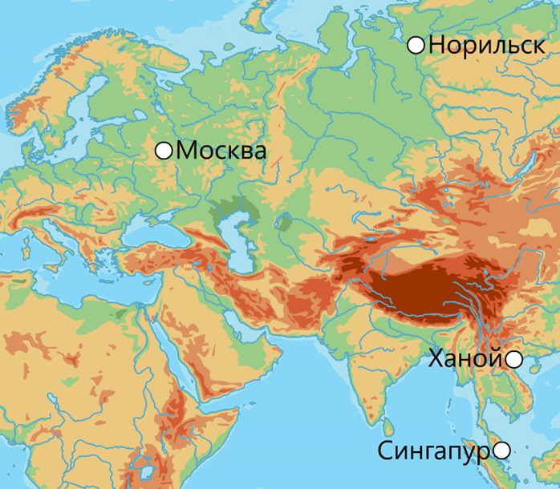
Элементы для порядка:
Сингапур
Москва
Ханой
Норильск
Запомни
Запомни суть: Количество солнечного тепла, поступающего на земную поверхность, определяется высотой Солнца над горизонтом, которая зависит от широты местности. Чем выше Солнце, тем больше угол падения солнечных лучей, тем больше тепла… Правильный ответ в тесте нужно выбирать в том же виде, как ниже. Коротко: Норильск → Москва → Ханой → Сингапур
Ответ в формате теста
Норильск → Москва → Ханой → Сингапур
🌍 Карты, океан, атмосфера
география · Тест 3 География · вопрос 13 из 13
Вопрос
Нагревание земной поверхности зависит от количества поступающего солнечного тепла, которое напрямую связано с углом падения солнечных лучей. Расположите отмеченные на карте города в порядке увеличения количества солнечного тепла, поступающего на земную поверхность в полдень по местному времени 21 марта.
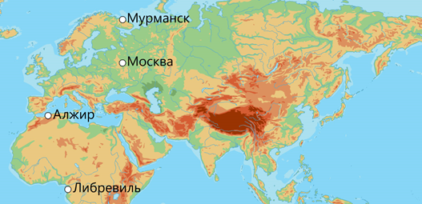
Элементы для порядка:
Москва
Либервиль
Мурманск
Алжир
Запомни
Запомни суть: Нагревание земной поверхности зависит от количества поступающего солнечного тепла, которое напрямую связано с углом падения солнечных лучей. Расположите отмеченные на карте города в порядке увеличения количества солнечно… Правильный ответ в тесте нужно выбирать в том же виде, как ниже. Коротко: Мурманск → Москва → Алжир → Либервиль
Ответ в формате теста
Мурманск → Москва → Алжир → Либервиль
🌍 Карты, океан, атмосфера
география · Тест 4 География · вопрос 1 из 15
Вопрос
Установите соответствие изображения облака с его описанием.1 .Перистые2. Слоистые3. Кучевые
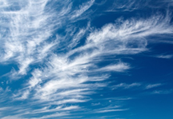
Соотнеси:
Образуются, когда теплый воздух медленно поднимается вверх по холодному воздуху
Образуются при подъеме нагретого воздуха от земной поверхности
Образуются на большой высоте из кристалликов льда
Варианты ответов: 2, 3, 1
Запомни
Запомни суть: Установите соответствие изображения облака с его описанием.1 .Перистые2. Слоистые3. Кучевые Правильный ответ в тесте нужно выбирать в том же виде, как ниже. Коротко: Образуются, когда теплый воздух медленно поднимается вверх по холодному — 2 (слоистые); Образуются при подъеме нагретого воздуха от земной поверхности — 3 (кучевые); Образуются на большой высоте из кристалликов льда — 1 (перистые)
Ответ в формате теста
Образуются, когда теплый воздух медленно поднимается вверх по холодному — 2 (слоистые)
Образуются при подъеме нагретого воздуха от земной поверхности — 3 (кучевые)
Образуются на большой высоте из кристалликов льда — 1 (перистые)
🌍 Карты, океан, атмосфера
география · Тест 4 География · вопрос 2 из 15
Вопрос
Разнообразие метеорологических условий способствует разнообразию видов осадков. В зависимости от условий часть из них образуется из облаков, а другая часть – непосредственно из водяного пара при переходе его из газообразного состояния в жидкое или твёрдое. Распределите атмосферные осадки по группам.
Соотнеси:
Снег
Изморозь
Дождь
Роса
Град
Иней
Варианты ответов: Выпадают из облаков, Конденсируются на земной поверхности и предметах
Запомни
Запомни суть: Разнообразие метеорологических условий способствует разнообразию видов осадков. В зависимости от условий часть из них образуется из облаков, а другая часть – непосредственно из водяного пара при переходе его из газообраз… Правильный ответ в тесте нужно выбирать в том же виде, как ниже. Коротко: Снег — Выпадают из облаков; Дождь — Выпадают из облаков; Град — Выпадают из облаков; Изморозь — Конденсируются на земной поверхности и предметах; Роса — Конденсируются на земной поверхности и предметах; Иней — Конденсируются на земной повер…
Ответ в формате теста
Снег — Выпадают из облаков
Дождь — Выпадают из облаков
Град — Выпадают из облаков
Изморозь — Конденсируются на земной поверхности и предметах
Роса — Конденсируются на земной поверхности и предметах
Иней — Конденсируются на земной поверхности и предметах
🌍 Карты, океан, атмосфера
география · Тест 4 География · вопрос 3 из 15
Вопрос
Установите соответствие между видом ветра и особенностью его образования, обусловленной неравномерным распределением атмосферного давления в течение разных отрезков времени. А Б
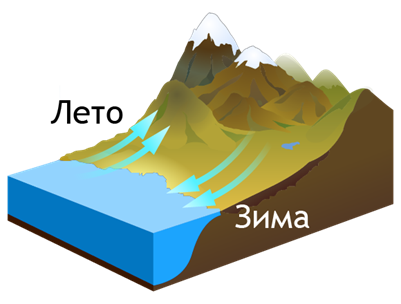
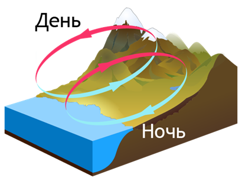
Соотнеси:
Бриз
Муссон
Варианты ответов: ,, Б, А
Запомни
Запомни суть: Установите соответствие между видом ветра и особенностью его образования, обусловленной неравномерным распределением атмосферного давления в течение разных отрезков времени. А Б Правильный ответ в тесте нужно выбирать в том же виде, как ниже. Коротко: Бриз — суточный ветер берег/море (на схеме обычно подпись про день и ночь); Муссон — сезонный ветер материк/океан (на схеме обычно подпись про зиму и лето). Выбери буквы А/Б по рисунку.
Ответ в формате теста
Бриз — суточный ветер берег/море (на схеме обычно подпись про день и ночь)
Муссон — сезонный ветер материк/океан (на схеме обычно подпись про зиму и лето). Выбери буквы А/Б по рисунку.
🌍 Карты, океан, атмосфера
география · Тест 4 География · вопрос 4 из 15
Вопрос
Погода характеризуется метеорологическими элементами и атмосферными явлениями, которые отражают многообразие протекающих в атмосфере процессов. Распределите указанные погодные характеристики в соответствующие группы.
Соотнеси:
Температура
Роса
Гроза
Туман
Влажность воздуха
Атмосферное давление
Скорость ветра
Радуга
Варианты ответов: Метеорологические элементы, Атмосферные явления
Запомни
Запомни суть: Погода характеризуется метеорологическими элементами и атмосферными явлениями, которые отражают многообразие протекающих в атмосфере процессов. Распределите указанные погодные характеристики в соответствующие группы. Правильный ответ в тесте нужно выбирать в том же виде, как ниже. Коротко: Температура — Метеорологические элементы; Влажность воздуха — Метеорологические элементы; Атмосферное давление — Метеорологические элементы; Скорость ветра — Метеорологические элементы; Роса — Атмосферные явления; Гроза — Атмосферные явлени…
Ответ в формате теста
Температура — Метеорологические элементы
Влажность воздуха — Метеорологические элементы
Атмосферное давление — Метеорологические элементы
Скорость ветра — Метеорологические элементы
Роса — Атмосферные явления
Гроза — Атмосферные явления
Туман — Атмосферные явления
Радуга — Атмосферные явления
🌍 Карты, океан, атмосфера
география · Тест 4 География · вопрос 5 из 15
Вопрос
Скорость ветра зависит от разницы атмосферного давления между областью повышенного давления и областью пониженного давления. Определи в каком случае скорость ветра будет выше?
Варианты:
760 мм рт. ст. и 756 мм рт. ст.
752 мм рт. ст. и 731 мм рт. ст.
746 мм рт. ст. и 750 мм рт. ст.
753 мм рт. ст. и 765 мм рт. ст.
Запомни
Запомни суть: Скорость ветра зависит от разницы атмосферного давления между областью повышенного давления и областью пониженного давления. Определи в каком случае скорость ветра будет выше? Правильный ответ в тесте нужно выбирать в том же виде, как ниже. Коротко: 752 мм рт. ст. и 731 мм рт. ст.
Ответ в формате теста
752 мм рт. ст. и 731 мм рт. ст.
🌍 Карты, океан, атмосфера
география · Тест 4 География · вопрос 6 из 15
Вопрос
Какое утверждение о летнем муссоне является верным?
Варианты:
Летом муссон не возникает
Летом муссон дует с океана на сушу
Летом муссон дует между различными частями суши
Летом муссон дует с суши на океан
Запомни
Запомни суть: Какое утверждение о летнем муссоне является верным? Правильный ответ в тесте нужно выбирать в том же виде, как ниже. Коротко: Летом муссон дует с океана на сушу
Ответ в формате теста
Летом муссон дует с океана на сушу
🌍 Карты, океан, атмосфера
география · Тест 4 География · вопрос 7 из 15
Вопрос
Для характеристики погоды и климата большое значение имеет количество осадков, выпадающих на территорию в определённый промежуток времени. Количество осадков выражается в мм слоя выпавшей воды. Данные по годовому распределению осадков представлены в таблице. Определите верные утверждения, используя данные таблицы.
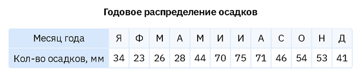
Варианты:
Всего за год выпадает 565 мм
В январе выпадает меньше всего осадков
Разность между максимальным и минимальным количеством осадков составляет 52 мм
Количество осадков с июля по декабрь увеличивается
Максимальное количество осадков выпадает в июле
Запомни
Запомни суть: Для характеристики погоды и климата большое значение имеет количество осадков, выпадающих на территорию в определённый промежуток времени. Количество осадков выражается в мм слоя выпавшей воды. Данные по годовому распред… Правильный ответ в тесте нужно выбирать в том же виде, как ниже. Коротко: Сверь с таблицей в тесте. Обычно верны строки про сумму за год, месяц минимума/максимума и разность max−min. Неверно, если период «с июля по декабрь» на таблице не растёт.
Ответ в формате теста
Сверь с таблицей в тесте. Обычно верны строки про сумму за год, месяц минимума/максимума и разность max−min. Неверно, если период «с июля по декабрь» на таблице не растёт.
🌍 Карты, океан, атмосфера
география · Тест 4 География · вопрос 8 из 15
Вопрос
Укажи два утверждения, которые верно характеризуют информацию о природном явлении, произошедшем в Смоленске 11 июля 2022 года.Во второй половине дня 11 июля гроза, накрывшая Смоленск, сопровождалась огромным градом. Из мощных кучево-дождевых облаков выпали осадки: дождь, а местами – град. В некоторых районах Смоленской области размер градин был примерно с куриное яйцо. От непогоды пострадали автомобили, а также теплицы на дачных участках.
Варианты:
Град выделяется из воздуха
Град выпадает из слоистых облаков
Град выпадает из кучево-дождевых облаков
Град выпадает в теплое время года
Град выпадает преимущественно в зимний период
Запомни
Запомни суть: Укажи два утверждения, которые верно характеризуют информацию о природном явлении, произошедшем в Смоленске 11 июля 2022 года.Во второй половине дня 11 июля гроза, накрывшая Смоленск, сопровождалась огромным градом. Из м… Правильный ответ в тесте нужно выбирать в том же виде, как ниже. Коротко: Град выпадает из кучево-дождевых облаков; Град выпадает в теплое время года
Ответ в формате теста
Град выпадает из кучево-дождевых облаков
Град выпадает в теплое время года
🌍 Карты, океан, атмосфера
география · Тест 4 География · вопрос 9 из 15
Вопрос
В каких широтах выпадает наименьшее количество осадков?
Варианты:
Умеренные
Полярные
Тропические
Во всех примерно одинаковое
Экваториальные
Запомни
Запомни суть: В каких широтах выпадает наименьшее количество осадков? Правильный ответ в тесте нужно выбирать в том же виде, как ниже. Коротко: Полярные; Тропические
Ответ в формате теста
Полярные
Тропические
🌍 Карты, океан, атмосфера
география · Тест 4 География · вопрос 10 из 15
Вопрос
С апреля до ноября над южной и юго-восточной частью Таиланда господствует летний муссон. Он приносит на территорию Таиланда морской воздух и много осадков. Какие два утверждения, характеризующие муссоны, являются верными?
Варианты:
Днём муссон дует с океана на сушу, а ночью с суши на океан
Зимой муссоны дуют с холодного континента на теплый океан
Муссоны меняются в течение суток
Муссоны возникают из-за различий в нагревании и охлаждении суши и океана
Зимой муссон дует с океана на сушу
Запомни
Запомни суть: С апреля до ноября над южной и юго-восточной частью Таиланда господствует летний муссон. Он приносит на территорию Таиланда морской воздух и много осадков. Какие два утверждения, характеризующие муссоны, являются верными… Правильный ответ в тесте нужно выбирать в том же виде, как ниже. Коротко: Зимой муссоны дуют с холодного континента на теплый океан; Муссоны возникают из-за различий в нагревании и охлаждении суши и океана
Ответ в формате теста
Зимой муссоны дуют с холодного континента на теплый океан
Муссоны возникают из-за различий в нагревании и охлаждении суши и океана
🌍 Карты, океан, атмосфера
география · Тест 4 География · вопрос 11 из 15
Вопрос
Определите, какие из утверждений относятся к описанию погоды.
Варианты:
Во второй половине недели морозы усилятся, в выходные вероятны двадцатиградусные морозы
Для этого острова характерно большое количество осадков и летний режим их выпадения
Только за двое суток в Воронеже суммарно в виде мокрого снега выпало 54 мм осадков при месячной норме 31 мм
Среднемесячная температура в этом регионе составляет 24–28 °С, годовая амплитуда температур равна 4–6 °С
Судя по данным синоптической карты, в ближайшие сутки ожидается существенное потепление
2 часа назад в Норвегии наблюдалась сильная метель
Запомни
Запомни суть: Определите, какие из утверждений относятся к описанию погоды. Правильный ответ в тесте нужно выбирать в том же виде, как ниже. Коротко: Во второй половине недели морозы усилятся, в выходные вероятны двадцатиградусные морозы; Только за двое суток в Воронеже суммарно в виде мокрого снега выпало 54 мм осадков при месячной норме 31 мм; Судя по данным синоптической карты, в ближ…
Ответ в формате теста
Во второй половине недели морозы усилятся, в выходные вероятны двадцатиградусные морозы
Только за двое суток в Воронеже суммарно в виде мокрого снега выпало 54 мм осадков при месячной норме 31 мм
Судя по данным синоптической карты, в ближайшие сутки ожидается существенное потепление
2 часа назад в Норвегии наблюдалась сильная метель
🌍 Карты, океан, атмосфера
география · Тест 4 География · вопрос 12 из 15
Вопрос
На диаграмме показано распределение количества осадков, выпавших за каждый месяц года, на одной из территорий Земли. По данным диаграммы было составлено описание особенностей территории. Используя информацию с диаграммы, определите предложения, в которых неверно показаны особенности территории. Запишите номера предложений по порядку без пробелов.(1) На этой территории осадки наблюдались в течение всего года. (2) Их количество изменялось от минимального (38 мм) до максимального (68 мм). (3) Наибольшее количество осадков выпало в осенние месяцы. (4) Наименьшее количество осадков выпало в зимний период. (5) При этом минимальное количество осадков наблюдалось в феврале. (6) Больше всего осадков выпало в июле. (7) Разница между максимальным количеством осадков и минимальным составила 30 мм.
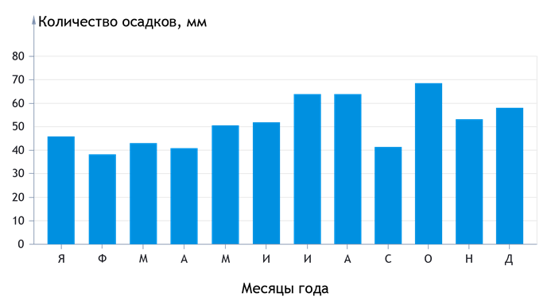
Запомни
Запомни суть: На диаграмме показано распределение количества осадков, выпавших за каждый месяц года, на одной из территорий Земли. По данным диаграммы было составлено описание особенностей территории. Используя информацию с диаграммы,… Правильный ответ в тесте нужно выбирать в том же виде, как ниже. Коротко: Сверь диаграмму. Неверны те предложения, где месяц max/min или сезон не совпадает со столбцами. Номера запиши подряд без пробелов, как просит тест.
Ответ в формате теста
Сверь диаграмму. Неверны те предложения, где месяц max/min или сезон не совпадает со столбцами. Номера запиши подряд без пробелов, как просит тест.
🌍 Карты, океан, атмосфера
география · Тест 4 География · вопрос 13 из 15
Вопрос
При температуре 20 °С в 1 м3 насыщенного воздуха содержится 17 г водяного пара. При температуре 30 °С этот же насыщенный воздух содержит 30 г водяного пара. Определите, сколько граммов водяного пара конденсируется из 1 м3 насыщенного воздуха при его охлаждении с 30 °С до 20 °С.
Запомни
Запомни суть: При температуре 20 °С в 1 м3 насыщенного воздуха содержится 17 г водяного пара. При Правильный ответ в тесте нужно выбирать в том же виде, как ниже. Коротко: 13
Ответ в формате теста
13
🌍 Карты, океан, атмосфера
география · Тест 4 География · вопрос 14 из 15
Вопрос
Рассчитай относительную влажность воздуха, если абсолютная влажность воздуха составляет 15 г/м3 при температуре +30°Используй схему.Ответ запиши в виде целого числа
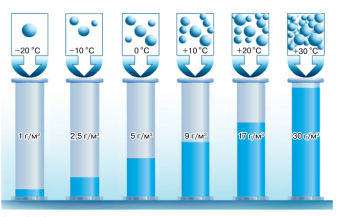
Запомни
Запомни суть: Рассчитай относительную влажность воздуха, если абсолютная влажность воздуха составляет 15 г/м3 при температуре +30°Используй схему.Ответ запиши в виде целого числа Правильный ответ в тесте нужно выбирать в том же виде, как ниже. Коротко: 50
Ответ в формате теста
50
🌍 Карты, океан, атмосфера
география · Тест 4 География · вопрос 15 из 15
Вопрос
При температуре 0° относительная влажность воздуха составляет 30%. Сколько граммов воды содержит 1 м3 этого воздуха?Используй схемуОтвет запиши в виде десятичной дроби с точностью до десятых
Запомни
Запомни суть: При температуре 0° относительная влажность воздуха составляет 30%. Сколько граммов воды содержит 1 м3 этого воздуха?Используй схемуОтвет запиши в виде десятичной дроби с точностью до десятых Правильный ответ в тесте нужно выбирать в том же виде, как ниже. Коротко: 1,5